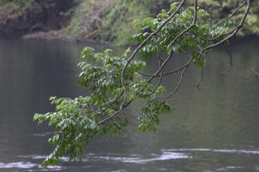
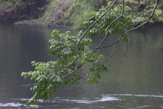
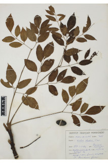
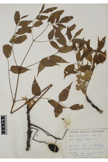
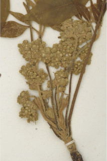
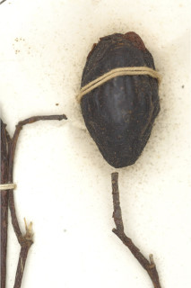
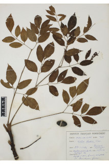
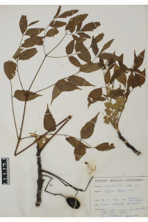
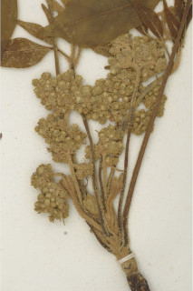
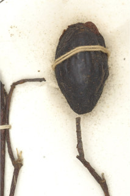

Tree up to 25 m tall.
25 ಮೀ. ಎತ್ತರದವರೆಗೆ ಬೆಳೆಯುವ ಮರಗಳು.
Tree up to 25 m tall.
மரங்கள் 25 மீ. உயரம் வரை வளரக்கூடியது.
Bark dark brown, flakes large rectangular in shape.
ತೊಗಟೆ ಕಡು ಕಂದು ಬಣ್ಣದಲ್ಲಿದ್ದು ಚಕ್ಕೆಗಳು ಆಯತಾಕಾರದಲ್ಲಿದ್ದು ದೊಡ್ಡ ಗಾತ್ರದಲ್ಲಿರುತ್ತವೆ.
Bark dark brown, flakes large rectangular in shape.
மரத்தின் பட்டை கரும் ப்ரவுன் நிறமானது, பெரிய நீள்சதுர செதில்களாக உதிருபவை.
Young parts scurfy-tomentose, branchlets terete, glabrous when mature.
ಎಳೆಯ ಭಾಗಗಳು ಹಗರು–ದಟ್ಟ ಮೃದು ತುಪ್ಪಳದಿಂದ ಕೂಡಿದ್ದು ದುಂಡಾಗಿರುತ್ತದೆ, ಬಲಿತಾಗ ರೋಮ ರಹಿತವಾಗಿರುತ್ತದೆ.
Young parts scurfy-tomentose, branchlets terete, glabrous when mature.
சிறியநுனிக்கிளைகள் குறுக்குவெட்டுத் தோற்றத்தில் வளையமானது, உரோமங்களுடையது , முதிரும் போது உரோமங்களற்றது.
Leaves compound, bipinnate to tripinnate, imparipinnate, alternate, spiral, up to 1 m long, pulvinate; rachis terete, to 30 cm long; petiolule 0.3-1.2 cm; pinnae 3-8 pairs; leaflets 2-11 on each pinnae, opposite, 4.5-9 x 2-4 cm, ovate - elliptic, apex acuminate, base cuneate or attenuate, asymmetric, margin crenate, coriaceous, glabrous when mature; midrib raised above; secondary_nerves ca. 10 pairs, gradually curved; tertiary_nerves broadly reticulate.
ಎಲೆಗಳು ಸಂಯುಕ್ತ,ದ್ವಿಗರಿಯಿಂದ ತ್ರಿಗರಿ ರೂಪಿಗಳಾಗಿದ್ದು ಅಸಮ ಸಂಖ್ಯೆಯ ಗರಿಗಳನ್ನು ಹೊಂದಿರುತ್ತವೆ ಮತ್ತು ಪರ್ಯಾಯ,ಸುತ್ತು ಜೋಡನೆಯಲ್ಲಿದ್ದು 1 ಮೀ. ವರೆಗಿನ ಉದ್ದವನ್ನು ಹೊಂದಿರುತ್ತದೆ ಹಾಗೂ ಉಬ್ಬಿದ ಎಲೆ ಬುಡವನ್ನು ಹೊಂದಿರುತ್ತವೆ; ನಡುಕಾಂಡ ದುಂಡಾಗಿದ್ದು 30 ಸೆಂ.ಮೀ. ವರೆಗಿನ ಉದ್ದವನ್ನು ಹೊಂದಿರುತ್ತದೆ; ಕಿರು ತೊಟ್ಟುಗಳು 0.3-1.2 ಸೆಂ.ಮೀ. ಉದ್ದವಿರುತ್ತವೆ;ಗರಿಗಳು 3 -8 ಜೋಡಿಗಳಿರುತ್ತವೆ; ಕಿರುಪತ್ರಗಳು ಪ್ರತಿ ಗರಿಯಲ್ಲಿ 2 ರಿಂದ 11 ಇದ್ದು ಅಭಿಮುಖ ರೀತಿಯಲ್ಲಿ ಜೋಡಿತಗೊಂಡಿರುತ್ತವೆ ಮತ್ತು 4 – 5.9 X 2 - 4 ಸೆಂ. ಮೀ. ಗಾತ್ರ,ಅಂಡ - ಅಂಡವೃತ್ತ ಆಕಾರ, ಕ್ರಮೇಣ ಚೂಪಾಗುವ ತುದಿ,ಬೆಣೆ ಅಥವಾ ಒಳಬಾಗಿದ, ಅಸಮವಾದ ಬುಡ,ದುಂಡೇಣಿನ ಹಲ್ಲುಳ್ಳ ಅಂಚು, ಚರ್ಮದ ಮೇಲ್ಮೈ ಹೊಂದಿದ್ದು ಬಲಿತಾಗ ರೋಮರಹಿತವಾಗಿರುತ್ತವೆ; ಮಧ್ಯನಾಳ ಪತ್ರದ ಮೇಲ್ಭಾಗದಲ್ಲಿ ಮೇಲೆದ್ದಿರುತ್ತದೆ; ಎರಡನೇ ದರ್ಜೆಯ ನಾಳಗಳು ಅಂದಾಜು 10 ಜೋಡಿಗಳಿದ್ದು,ಕ್ರಮೇಣವಾಗಿ ಬಾಗಿರುತ್ತವೆ;ಮೂರನೇ ದರ್ಜೆಯ ನಾಳಗಳು ವಿಶಾಲ ಜಾಲಬಂಧ ನಾಳವಿನ್ಯಾಸದವು.
Leaves compound, bipinnate to tripinnate, imparipinnate, alternate, spiral, up to 1 m long, pulvinate; rachis terete, to 30 cm long; petiolule 0.3-1.2 cm; pinnae 3-8 pairs; leaflets 2-11 on each pinnae, opposite, 4.5-9 x 2-4 cm, ovate - elliptic, apex acuminate, base cuneate or attenuate, asymmetric, margin crenate, coriaceous, glabrous when mature; midrib raised above; secondary_nerves ca. 10 pairs, gradually curved; tertiary_nerves broadly reticulate.
கூட்டிலை, இருமுறை கிளைத்த சிறகுவடிவக்கூட்டிலை (பைபின்னேட்) அல்லது மூன்று முறை கிளைத்த சிறகு வடிவக்கூட்டிலை (2-3 பின்னேட்), ஒற்றைபடை சிறகு வடிவக்கூட்டிலைகள், மாற்றுஅடுக்கமானவை, சுழல் போல் அமைந்தது, 1 மீ. நீளமானது, பல்வினேட்; மத்தியகாம்பு குறுக்குவெட்டுத் தோற்றத்தில் வளையமானது, முதல் 30 செ.மீ. நீளமானது; சிற்றிலைக்காம்பு 0.3-1.2 செ.மீ.; பின்னே 3-8 ஜோடிகள்; ஒர் பின்னே 2-11 சிற்றிலைகள் உடையது, எதிரடுக்கமானவை, 4.5-9 x 2-4 செ.மீ., முட்டை வடிவானது-நீள்வட்ட வடிவானது, அலகின் நுனி அதிக்கூரியது, அலகின் தளம் ஆப்பு வடிவானது அல்லது அட்டனுவேட், சமமற்றது, அலகின் விளிம்பு பிறை போன்ற பற்களுடையது, கோரியேசியஸ், முதிரும் போது உரோமங்களற்றது; மையநரம்பு மேற்புறத்தில் அலகின் பரப்பைவிட உயர்ந்து இருக்கும்; இரண்டாம் நிலை நரம்புகள் ca. 10 ஜோடிகள், சீராக வளைந்தது; மூன்றாம் நிலை நரம்புகள் அகன்ற வலைப்பின்னல் போன்றவை.
Inflorescence axillary panicles, 12-20 cm long; flowers greenish-white.
ಪುಷ್ಪಮಂಜರಿಗಳು ಅಕ್ಷಾಕಂಕುಳಿನಲ್ಲಿರುವ ಪುನರಾವೃತ್ತಿಯಾಗಿ ಕವಲೊಡೆಯುವ ಮಧ್ಯಾಭಿಸರ ಮಾದರಿಯವು;ಹೂಗಳು ಹಸಿರು ಮಿಶ್ರಿತ ಬಿಳಿ ಬಣ್ಣ.
Inflorescence axillary panicles, 12-20 cm long; flowers greenish-white.
மஞ்சரி தண்டின் இலைக்கோணங்களில் காணப்படும் பேனிக்கிள், 12-20 செ.மீ. நீளமானது; மலர்கள் பச்சை-வெள்ளை நிறமானது.
Drupe, ovoid or ellipsoid, with longitudinal ridges, pulpy, yellowish; seeds 1-6.
ಡ್ರೂಪ್ ಫಲಗಳು ಅಂಡಾಕಾರ ಅಥವಾ ಅಂಡವೃತ್ತದ ಆಕಾರದಲ್ಲಿದ್ದು,ಉದ್ದನೆಯ ಉತ್ತುಗೆರೆ ಹೊಂದಿದ್ದು ರಸಭರಿತವಾಗಿರುತ್ತದೆ ಮತ್ತು ಹಳದಿ ಬಣ್ಣದಲ್ಲಿರುತ್ತದೆ. ಬೀಜಗಳು 1 ರಿಂದ 6.
Drupe, ovoid or ellipsoid, with longitudinal ridges, pulpy, yellowish; seeds 1-6.
உள்ளோட்டுத்தசைகனி (ட்ரூப்), முட்டைவடிவானது அல்லது நீள்வட்ட வடிவானது, நீள்வாக்கில் மேடுகளுடையது, சதைப்பற்றானது, மஞ்சள் நிறமானவை; விதைகள் 1-6.
 

 






